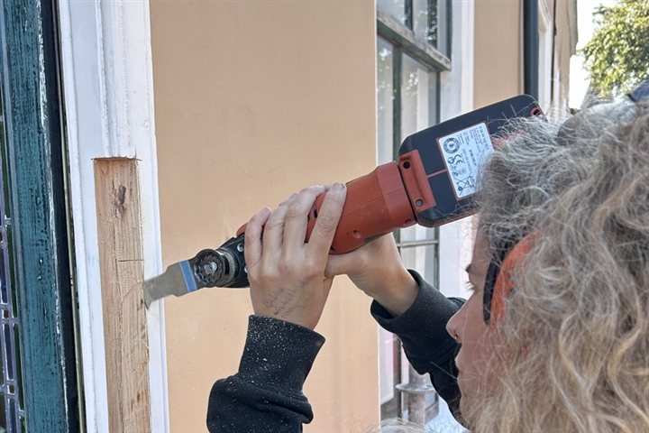
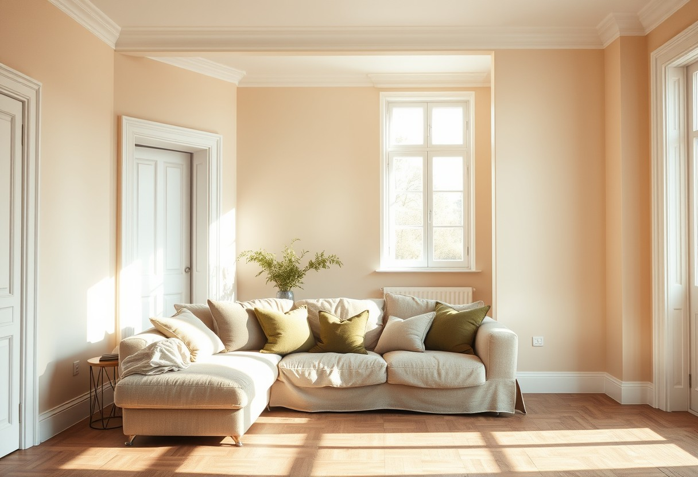
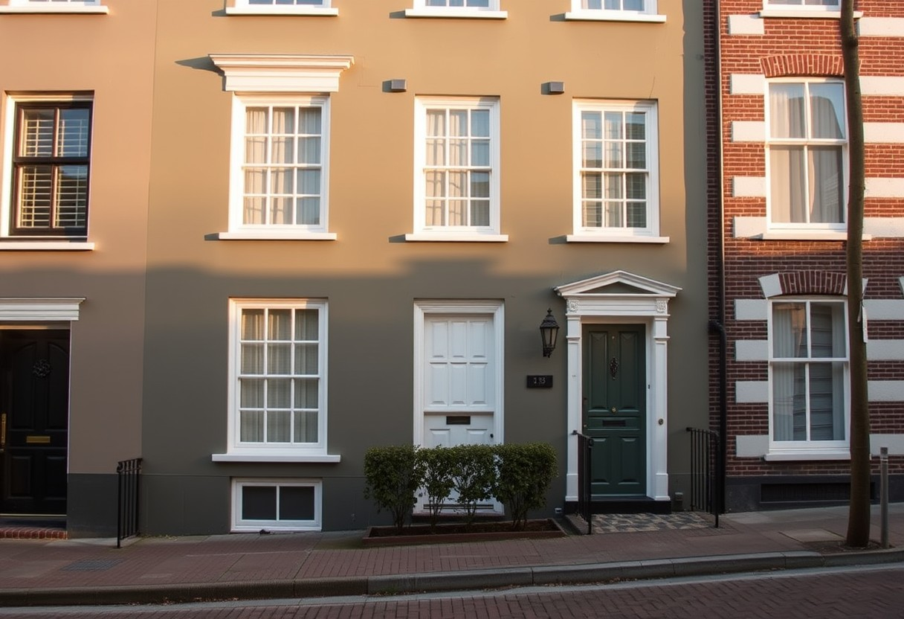
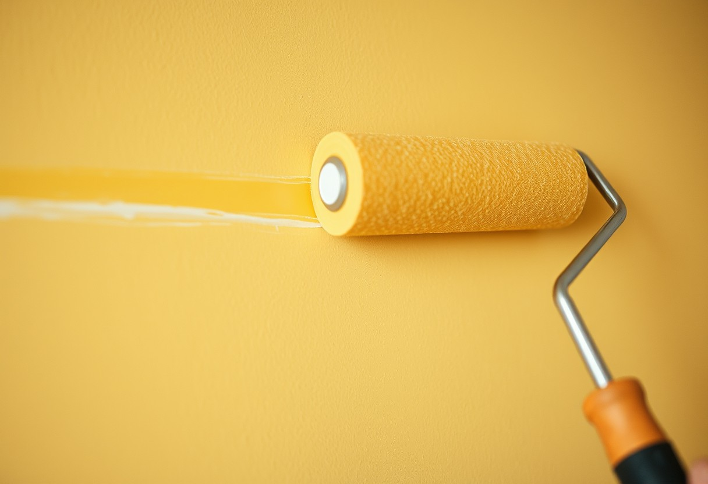
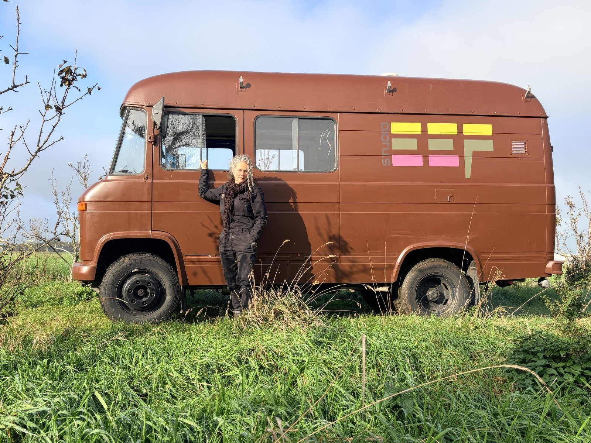

Schilderwerk · binnen en buiten
Een frisse laag verf voor je huis.
Studio EEF schildert muren, kozijnen, gevels en houtwerk, binnen en buiten. Zorgvuldig afgeplakt, elke dag netjes opgeruimd.
Vraag een offerte Zo werken wij
- Offerte
- Binnen twee werkdagen
- Werkplek
- Elke dag netjes opgeruimd
- Aanspreekpunt
- Altijd dezelfde schilder
Diensten
Wat we voor je schilderen
-
Binnenschilderwerk
Muren, plafonds, kozijnen en deuren. Van schuren en gronden tot de laatste laag.
-
Buitenschilderwerk
Gevels, kozijnen en houtwerk buiten. Weerbestendig en kleurecht — een laag die jaren meegaat.
-
Onderhoud & kleine klussen
Vensterbanken, deuren en retouches. Ook als het om één kozijn of één muur gaat.

Werk
Kleur aan de muur
Impressies in de huisstijlkleuren. Foto’s van uitgevoerd werk komen hier zodra ze er zijn.



Werkwijze
Van eerste bezoek tot laatste laag
-
Kijken
We komen langs, bekijken het werk en denken mee over kleur.
-
Offerte
Binnen twee werkdagen ligt er een heldere offerte voor je klaar. Geen verrassingen achteraf.
-
Afplakken
We prikken een datum en plakken alles af: vloeren, randen, beslag. We beginnen pas als je huis beschermd is.
-
Schilderen
Elke laag krijgt de tijd om goed te drogen. Aan het einde van de dag ruimen we alles op.
-
Opleveren
Samen lopen we het werk na. Ben je tevreden? Dan pas zijn we klaar.
Over EEF
Een schilder die je huis behandelt alsof het haar eigen huis is
Studio EEF is een klein schildersbedrijf. Van de eerste afspraak tot de laatste kwaststreek heb je altijd met dezelfde schilder te maken.
We werken in en om [plaats + regio]. Ook klussen waar anderen het bijltje erbij neerleggen — één kozijn, een trappenhuis, een tuinhek dat al jaren wacht — pakken we gewoon aan.

Contact
Vertel wat er geschilderd moet worden
Bel, mail of app — binnen één werkdag heb je antwoord.